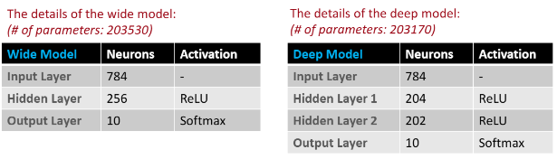
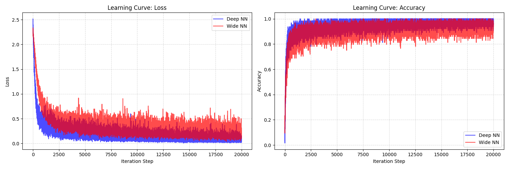
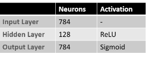

基礎 MNIST 辨識與 Denoising Autoencoder 練習
本專案從底層實作基礎線性模型 (Linear Model) 來解決經典的 MNIST 手寫數字辨識問題，並深入比較 Deep 與 Wide 兩種網路架構在效能上的差異。此外，進一步實作 Autoencoder (AE) 進行影像去噪，嘗試從帶有噪點的圖片中還原出清晰的原圖。
根據作業要求構建了兩組神經網路架構，手動實作正向與反向傳播的計算過程，並比較 Deep (深層網路) 與 Wide (寬淺層網路) 的準確度表現。
 實驗結果顯示，雖然 Deep 網路的擬合能力略強，但在 MNIST 這種特徵較為簡單的資料集上，兩者的最終辨識準確率差異並不明顯。
實作基礎的 Autoencoder 進行影像還原。實驗中先為原始圖片加入高斯噪點，期望模型能學習提取核心特徵並過濾雜訊。
# 為圖片加入高斯雜訊
noise = np.random.normal(0, 0.35, clean_imgs.shape).astype(np.float32)
noisy_imgs = np.clip(clean_imgs + noise, 0., 1.)此外，我額外實作了採用卷積架構的 Convolutional Autoencoder (CAE) 進行成效對比：
# CAE Encoder 部分實作
self.encoder = nn.Sequential(
nn.Conv2d(1, 16, kernel_size=3, stride=2, padding=1),
nn.ReLU(),
nn.Conv2d(16, 32, kernel_size=3, stride=2, padding=1),
nn.ReLU(),
)結論分析： 兩者在影像還原能力上表現相近。然而在運算效率上，基礎 AE 擁有高達 201,616 個參數，而 CAE 僅需 9,569 個參數。此外，CAE 的訓練時間明顯較短，充分展現了 CNN 卷積架構在處理影像數據時，具備參數共享與空間特徵提取的巨大優勢。
點擊下方按鈕查看完整程式碼實作與筆記。
View on GitHub